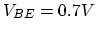
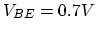
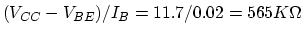
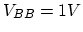
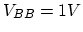

Assume ,  ,  when the base-emitter PN
junction is forward biased.
,  when the base-emitter PN
junction is forward biased.

Solution:
. For
 , the corresponding
, the corresponding  can be found to be
can be found to be  by solving
.
by solving
.
If and AC component of is , the AC component
of is . The corresponding AC component of  can be found as
can be found as
 , and the AC component of
is
. Therefore the slope of the input
characteristic curve is , i.e., the equivalent resistance
is
.
, and the AC component of
is
. Therefore the slope of the input
characteristic curve is , i.e., the equivalent resistance
is
.
A transistor circuit and the output characteristic plot of the transistor
in the circuit are shown below. Assume
 ,
,  ,
and . Assume when the base-emitter PN-junction
is forward biased, and when the transistor is saturated.
,
and . Assume when the base-emitter PN-junction
is forward biased, and when the transistor is saturated.
Solution: , , When , . .
When , . .
In the transistor amplification circuit shown below, ,
 . Assume the AC component of the input current is
. Assume the AC component of the input current is
 . Sketch the output characteristic plot
of the transistor circuit with the load line, and the current
. Sketch the output characteristic plot
of the transistor circuit with the load line, and the current  ,
output voltage on the same plot, for each of the following
three cases:
,
output voltage on the same plot, for each of the following
three cases:
Solution:
The two points of the load line are: and . The DC component of base current is , and the correspondingly . The corresponding output voltage is , the transistor is in the saturation region of its output characteristic plot.
At the negative peak of input current , and .
At the positive peak of input current , and , indicating the transistor is deeply saturated, the actually .
At the negative peak of input current , and .
At the positive peak of input current , and .
The two points of the load line are: and . The DC component of base current is , and the correspondingly . The corresponding output voltage is , the transistor is in the middle of the linear region of its output characteristic plot.
At the negative peak of input current , and .
At the positive peak of input current , and .